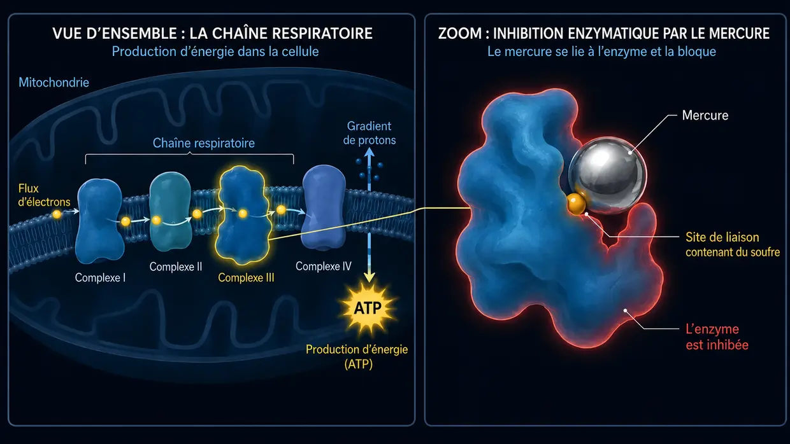

Acouphènes dus aux médicaments et aux substances toxiques (ototoxicité)
Dernière mise à jour : juin 2026
Moi aussi, à l’époque, je souffrais d’acouphènes extrêmes, infernaux. Dans mon cas, les acouphènes classiques dus au bruit étaient certes, à l’époque, le déclencheur principal (et non un événement aigu lié à un médicament), mais ce bruit constant constituait exactement la même attaque permanente contre mes nerfs, mon sommeil et toute ma vie. Les médecins me disaient souvent, à moi aussi, que je devais simplement apprendre à vivre avec.
J’écris cet article sur les déclencheurs chimiques parce que ce sujet a joué un rôle important dans mes propres recherches. Depuis 2012, je me suis penché de manière intensive sur la biochimie cellulaire — y compris la toxicologie et la médecine environnementale. Et c’est précisément ici que la boucle est bouclée : dans la pratique de médecins spécialisés en médecine environnementale (comme le Dr Klinghardt ou le Dr Mutter), on observe souvent un phénomène fascinant. Lorsqu’une charge corporelle en substances toxiques ou en métaux lourds, jusque-là passée inaperçue, constitue un facteur déterminant chez des patients souffrant d’acouphènes (surtout lorsque cette charge joue réellement un rôle important), une détoxification cellulaire ciblée peut souvent entraîner une diminution nette ou perceptible des bruits dans l’oreille. Ce que je partage ici reflète l’état de mes connaissances issues de ces recherches — et constitue le fondement des approches que nous présenterons plus loin sur ce site, elles aussi fondées sur ces recherches.
L’attaque chimique de l’intérieur
Lorsque nous pensons aux acouphènes, deux images nous viennent généralement aussitôt à l’esprit : le concert assourdissant (le bruit) ou un stress massif, qu’il soit général ou lié à un traumatisme intérieur (psychosomatique). Il existe pourtant un troisième déclencheur, qui n’est ni mécanique ni émotionnel, mais purement chimique : les acouphènes dus aux médicaments ou aux substances toxiques. À mon sens, ce type d’acouphènes figure parmi les moins fréquents — mais, par souci d’exhaustivité, je tiens également à exposer ma façon de voir ce troisième déclencheur. En langage technique, on parle d’ototoxicité (autrement dit : « toxicité pour l’oreille »).
Cela peut sembler abstrait au premier abord, mais notre oreille interne est extrêmement sensible à certaines substances chimiques. Certains médicaments ou polluants environnementaux peuvent atteindre directement l’oreille interne par la circulation sanguine et y irriter, voire endommager, les fragiles cellules ciliées ou le nerf auditif.
Le mécanisme : comment la chimie produit des sons
Rappelons-nous le canal ionique situé à l’extrémité des cils, qui, après une surcharge, reste beaucoup trop ouvert en permanence et ne se referme plus correctement. Lors d’un traumatisme sonore, la cellule ciliée est physiquement endommagée ou pliée par la force mécanique (les ondes sonores).
Avec les acouphènes dus aux médicaments ou aux substances toxiques, il se produit souvent quelque chose de très similaire au bout du compte, mais le chemin qui y mène est différent. Au fond, il faut imaginer chaque cellule ciliée de l’oreille comme une petite batterie biologique. Elle maintient un équilibre extrêmement subtil entre l’énergie (ATP), les minéraux et la tension électrique.
Lorsque cet équilibre subtil est massivement perturbé par des substances chimiques (polluants environnementaux ou doses toxiques de médicaments), voici ce qui se produit au niveau cellulaire d’après ce que je comprends de la biochimie :
Le niveau d’énergie (ATP) de la cellule chute. Les minuscules pompes présentes dans la paroi cellulaire n’arrivent alors tout simplement plus à suivre assez vite pour maintenir l’équilibre chimique. Du calcium s’accumule en conséquence à l’intérieur de la cellule. Comme le calcium est, en biologie, le déclencheur direct de la transmission des signaux, cet excès d’ions force la cellule à envoyer en permanence et sans contrôle des salves de « faux signaux ». Pour moi, il ne s’agit pas d’un hasard mystérieux, mais d’un automatisme biochimique logique. Le cerveau perçoit ce tir électrique continu comme un bruit.
La nature exacte du son que vous entendez — sifflement aigu, chuintement ou bourdonnement grave — dépend généralement tout simplement de l’endroit précis de la cochlée (le « limaçon » de l’oreille) où se trouvent les cellules ciliées concernées. À ce moment-là, l’oreille n’est le plus souvent pas détruite physiquement, mais sa délicate harmonie intérieure se désaccorde.
Les courts-circuits électriques (le nerf auditif)
Les cellules ciliées ne sont pas les seules en danger : le « câble électrique » lui-même — le nerf auditif — l’est aussi. Ce nerf est entouré d’une gaine protectrice, la myéline. Cette couche isolante est extrêmement riche en graisses et en minéraux, ce qui la rend particulièrement sensible aux substances toxiques circulant dans le sang. Lorsque cette gaine est affaiblie ou « amincie » par le stress chimique, le nerf ne transmet plus proprement les signaux. De véritables « courts-circuits » électriques apparaissent.
Et c’est ici qu’apparaît la logique pure de notre anatomie : notre nerf auditif n’est pas un simple fil isolé, mais un épais faisceau composé de milliers de minuscules fibres nerveuses. Chacune de ces fibres est chargée de transmettre un son d’une hauteur bien précise. Si le court-circuit toxique (la dégradation de la myéline) se produit précisément sur la fibre nerveuse responsable des hautes fréquences, votre cerveau enregistre logiquement un sifflement aigu. Si une fibre correspondant aux sons graves est touchée, vous entendez un bourdonnement grave. Le souffle, le chuintement ou le sifflement que vous percevez n’a donc absolument rien d’aléatoire : il dépend en grande partie de l’endroit minuscule où l’isolation du câble principal a été endommagée.
La loi universelle des acouphènes
Lorsque l’on assemble toutes les pièces de ce puzzle, un dénominateur central se dégage : d’après mon expérience et ma conviction la plus profonde, les acouphènes sont, en fin de compte, le résultat d’une irritation et d’une hyperexcitation chroniques des nerfs qui traitent l’audition. Sur le plan physique, l’endroit précis d’où part le signal qui déclenche cette hyperexcitation n’a presque aucune importance :
- Que les cellules ciliées (sous l’effet du bruit ou de médicaments) restent bloquées en mode de fonctionnement énergétique d’urgence et inondent en permanence le nerf auditif de glutamate…
- Que des polluants environnementaux et des métaux lourds attaquent l’isolation (la myéline) des nerfs et y provoquent directement des courts-circuits…
- Ou qu’un stress psychosomatique massif et chronique s’accumule dans le cerveau et mette pour ainsi dire « d’en haut » les centres de traitement auditif sous tension électrique permanente…
Une fois que l’on a compris cette logique universelle, les acouphènes perdent souvent complètement leur aura de mystère et d’effroi.
Au bout du compte, d’après mon expérience, le résultat final est presque toujours exactement le même : le système nerveux de cette zone est irrité de manière chronique et émet un SOS sous forme de barrage électrique permanent. Une fois que l’on a compris cette logique universelle, les acouphènes perdent souvent complètement leur aura de mystère et d’effroi — et le chemin vers la solution devient soudain limpide.
Déclencheurs typiques (substances ototoxiques)
Bon, reprenons : toute une série de substances sont connues pour leur effet potentiellement ototoxique. (Important : il ne s’agit pas d’une liste médicale destinée à l’autodiagnostic, mais uniquement d’une aide à la compréhension générale !)
1. Médicaments
Certains médicaments peuvent mettre l’oreille interne en état de surexcitation. Mais il ne suffit pas de connaître leur nom : il faut comprendre pourquoi ils font dérailler le système. Ce n’est qu’en comprenant la mécanique des lésions que notre approche ultérieure (énergie cellulaire et détoxification) prend tout son sens. Parmi les groupes les plus connus figurent :
Antalgiques à fortes doses (notamment aspirine/AAS)
Tout d’abord, pour vous rassurer : un comprimé ordinaire contre le mal de tête ne suffit généralement pas à provoquer des acouphènes. Selon les recherches, on observe souvent ici un paradoxe posologique très net. Le danger n’apparaît le plus souvent qu’à de très fortes doses, véritablement toxiques (souvent plusieurs grammes par jour). Lorsque cela se produit, des modèles pharmacologiques indiquent que le médicament déclenche dans l’oreille interne une réaction en chaîne en trois étapes :
- Le moteur tousse : on estime que la substance active bloque la prestine, une minuscule protéine qui fonctionne comme un moteur dans les cellules ciliées externes. L’amplificateur acoustique de l’oreille s’effondre alors. En réaction de panique, le cerveau pousse souvent au maximum le gain central (Central Gain), son « bouton de volume », pour pouvoir encore entendre quoi que ce soit.
- L’hypersensibilité nerveuse : parallèlement, des modèles indiquent que le médicament place les récepteurs du nerf auditif dans un état d’excitabilité accrue. Le seuil d’excitation baisse, ce qui fait que le système nerveux réagit déjà de manière nettement plus sensible aux signaux les plus faibles.
- La panne de courant (le déclencheur) : selon des recherches biochimiques, l’aspirine agit à forte dose comme un « découpleur » dans les mitochondries. Au sens figuré, elle coupe le courant de la cellule (manque d’ATP). Et c’est précisément là que se trouve la différence fascinante et logique avec le traumatisme sonore : avec le bruit, la force mécanique tord littéralement les fins cils de la cellule. Le canal calcique reste alors ouvert en permanence, telle une porte coincée, et le calcium entre sans frein. Lors d’une surdose d’aspirine, cela ne se produit pas. Les cils restent parfaitement intacts à leur place. Ici, c’est « seulement » la chimie qui s’est déréglée. Il n’entre pas davantage de calcium qu’à l’ordinaire — mais, en raison de la chute rapide de l’énergie, les minuscules pompes à calcium de la cellule ne parviennent tout simplement plus à l’expulser assez vite. Pendant ce laps de temps, la cellule est tout simplement incapable de faire face à un apport de calcium pourtant normal. Le résultat est finalement le même : le calcium s’accumule à l’intérieur et force la cellule à libérer sans interruption le neurotransmetteur glutamate.
Le résultat possible sur le plan des acouphènes est le suivant : ce flot incontrôlé de glutamate frappe des nerfs dont le seuil d’excitation est déjà abaissé (étape 2), puis est envoyé à un cerveau dont le bouton de volume est poussé à fond (étape 1). Un tir de barrage assourdissant se déclenche. Et cette logique cellulaire toute simple explique aussi un phénomène du quotidien auquel, souvent, même de nombreux médecins n’ont pas de réponse cohérente à apporter : pourquoi l’oncle qui a pris une surdose massive d’aspirine pendant une semaine retrouve-t-il souvent le calme dans son oreille peu de temps après l’arrêt, tandis que son neveu de 26 ans, qui n’est allé que deux fois dans une boîte de nuit bruyante, souffre depuis quatre mois d’acouphènes qui refusent tout simplement de disparaître ? Pour moi, la réponse est ici d’une évidence absolue : chez l’oncle, il s’agissait d’une panne de courant biochimique. Dès que le médicament a été arrêté en concertation avec le médecin et évacué de la circulation sanguine, les centrales de la cellule peuvent redémarrer, les pompes évacuent le calcium et le système peut de nouveau fonctionner sans erreur. Chez le neveu qui est allé en boîte de nuit, en revanche, il y a eu une violente agression mécanique brute. Ses fins cils ont été physiquement pliés ou collés. C’est comme si l’on avait tordu de force la charnière d’une porte — logiquement, cela ne se répare pas tout seul en un week-end simplement parce que le bruit a cessé.
Certains antibiotiques (aminosides)
Ces antibiotiques puissants ne sont généralement utilisés qu’à l’hôpital pour traiter des infections bactériennes graves (par exemple la gentamicine). Ils possèdent une propriété extrêmement insidieuse : ils s’accumulent souvent de manière ciblée dans le liquide de l’oreille interne, dont ils ne sont ensuite éliminés qu’avec une lenteur atroce — ils peuvent y rester pendant des semaines, voire des mois. Là, ils réagissent avec le fer présent dans le corps et déclenchent une explosion massive de « radicaux libres » (ROS). C’est comme un incendie biochimique généralisé qui attaque les fragiles membranes cellulaires et la charpente interne d’actine des cils. Une logique biologique simple entre alors en jeu, avec deux issues :
- Issue 1 (la mort cellulaire) : si l’organisme est déjà affaibli à ce moment-là, qu’il dispose de très peu de ressources nutritionnelles ou que des lésions préalables existent, la cellule s’effondre complètement sous cet incendie chimique et meurt (apoptose). Le résultat paradoxal : dans ce cas, aucun acouphène n’apparaît généralement. Une cellule morte n’émet plus aucun signal. Il en résulte à la place une perte auditive isolée et silencieuse (surdité) précisément à cette fréquence.
- Issue 2 (la lutte pour la survie = les acouphènes) : la cellule survit de justesse à l’attaque, mais reste massivement endommagée sur le plan structurel. Au fond, c’est exactement comme un traumatisme sonore, mais déclenché de manière purement chimique. Le squelette interne rigide (l’actine) s’effondre, ce qui fait que les cils se flétrissent littéralement comme des fleurs privées d’eau. Mais la cellule est toujours vivante ! Et parce qu’elle vit, elle tente désespérément de lutter contre le calcium qui entre par la membrane devenue poreuse. Comme cet afflux d’ions constitue le signal chimique direct qui commande la transmission, la cellule gravement endommagée est forcée, en mode de panique permanent, d’envoyer sans interruption vers le nerf auditif des salves du neurotransmetteur glutamate. Cette lutte cellulaire pour la survie devient un tir électrique continu — et c’est exactement ce que vous percevez comme des acouphènes.
Diurétiques (puissants comprimés qui favorisent l’élimination de l’eau)
Les diurétiques dits « de l’anse » ne retirent pas seulement de l’eau à l’organisme : ils éliminent aussi massivement des électrolytes comme le potassium et le sodium. Le problème ? L’oreille interne possède sa propre petite source de tension : la strie vasculaire. Cette couche de tissu pompe sans relâche du potassium dans le liquide de l’oreille afin d’y maintenir une tension électrique constante — c’est la batterie d’où les cellules ciliées tirent le courant nécessaire à l’audition. Les diurétiques bloquent précisément ce mécanisme biochimique de pompage. La tension électrique de l’oreille s’effondre alors massivement. La batterie biologique est soudain « vide » et le système auditif bascule dans un état d’alarme chaotique qui se décharge sous forme de souffle ou de sifflement.
Agents chimiothérapeutiques (comme le cisplatine)
Ces médicaments anticancéreux agressifs sont souvent à base de platine (un métal lourd). Ils sont programmés pour agir sur l’ADN des cellules. Mais lorsqu’un tel médicament entraîne des acouphènes, cela tient, selon des modèles pharmacologiques, à un véritable incendie biochimique généralisé dans l’oreille interne : dans ce cas, le cisplatine prive complètement la cellule de sa principale substance protectrice naturelle (le glutathion). Sans ce bouclier protecteur, les radicaux libres rongent la membrane cellulaire et y ouvrent des trous microscopiques, tout en détruisant les pompes ioniques. Il en résulte un déséquilibre ionique extrême : le calcium inonde la cellule et la force à entretenir un tir permanent de glutamate. Parallèlement, le cisplatine est fortement neurotoxique et désagrège littéralement la gaine de myéline (l’isolation) du nerf auditif. Lorsque le tir permanent de la cellule endommagée frappe un nerf sans protection, mis à nu, de véritables courts-circuits et ratés mesurables apparaissent directement sur le câble principal menant au cerveau. Ici encore s’applique la bifurcation biologique des acouphènes : si la cellule est complètement détruite (apoptose), il en résulte le plus souvent le silence (surdité). Si elle survit à l’état de ruine gravement endommagée, avec des membranes qui fuient et des nerfs à nu, elle émet souvent un signal parasite permanent. Cela explique pourquoi les acouphènes dus à la chimiothérapie sont souvent extrêmement tenaces.
Quinine (antipaludique et préparations contre les crampes musculaires)
La quinine exerce un puissant effet vasoconstricteur. L’oreille interne est une impasse anatomique absolue : elle n’est irriguée que par une seule et minuscule artère (l’artère labyrinthique). Il n’existe là aucun « itinéraire de déviation ». Lorsque la quinine resserre cette artère minuscule tout en rendant les globules rouges moins flexibles, la circulation sanguine ralentit. Les cellules ciliées sont alors coupées de l’apport absolument indispensable en oxygène et en nutriments. Elles se retrouvent en grave détresse respiratoire et basculent aussitôt en mode « panique-acouphènes ».
2. Métaux lourds et polluants environnementaux
Les métaux lourds, comme le mercure, le plomb, l’aluminium ou le cadmium, agissent au niveau cellulaire comme des saboteurs extrêmement agressifs. Quiconque s’est penché sur des protocoles de détoxification en profondeur le sait : ils ne se contentent pas d’empoisonner de manière diffuse les cellules de l’oreille interne ; ils s’insèrent précisément dans les processus biologiques et les bloquent. Dans la cochlée et le nerf auditif, cela se produit selon quatre mécanismes extrêmement destructeurs :
- 01Cheval de Troie
- 02Piratage des thiols
- 03Boulet de démolition
- 04Broyeur de myéline
Mécanisme 1 : le cheval de Troie (l’éviction des oligoéléments)
Des métaux comme le cadmium, le mercure et d’autres présentent souvent une ressemblance chimique étonnante avec des oligoéléments vitaux — surtout le zinc et le sélénium. Le corps se laisse tromper et incorpore le métal lourd dans les protéines à la place du zinc. Le résultat est désastreux : au niveau des récepteurs du nerf auditif, le zinc joue en effet le rôle d’une sorte de « frein » naturel. Il empêche le nerf de réagir de manière excessive au moindre stimulus. Lorsque ce zinc est évincé par un métal lourd, ce frein disparaît complètement. Les signaux acoustiques percutent le système nerveux sans aucun frein, ce qui, d’après mon expérience, se manifeste par des acouphènes assourdissants. Parallèlement, l’éviction du sélénium perturbe massivement la production du principal antioxydant propre à l’organisme (le glutathion). La protection cellulaire menace de s’effondrer.
Mécanisme 2 : le piratage des thiols (la déformation des protéines)

Les métaux lourds ont en outre une énorme affinité chimique pour le soufre. La plupart de nos enzymes et de nos minuscules pompes cellulaires (comme les pompes à calcium alimentées par l’ATP) possèdent des sites de liaison contenant du soufre, appelés groupes thiols (-SH). Lorsque le métal lourd arrive dans l’oreille interne, il se fixe immédiatement à ces groupes soufrés. Au moment où le métal se lie à l’enzyme, il force la protéine à modifier sa structure 3D — elle se déforme littéralement. La pompe à calcium de la cellule ciliée se bloque alors et cesse de fonctionner.
Mécanisme 3 : le boulet de démolition biologique (destruction cellulaire directe)
En plus de saboter les pompes, les métaux s’attaquent aussi, directement et physiquement, à la « machinerie » cellulaire. Le plomb et le cadmium pénètrent dans les mitochondries (les centrales de la cellule), s’installent dans la chaîne respiratoire cellulaire et étranglent massivement la production d’ATP. Au sens figuré, la cellule risque de s’étouffer de l’intérieur. Parallèlement, les métaux provoquent dans l’oreille une explosion de radicaux libres qui oxydent littéralement la gaine protectrice riche en graisses (la membrane) de la cellule ciliée : elle rancit, fond et devient poreuse (peroxydation lipidique). Le calcium toxique s’engouffre alors comme à travers un barrage rompu. De plus, les métaux attaquent la charpente protéique rigide (l’actine) à l’intérieur des minuscules cils sensoriels. Les ponts moléculaires cèdent, les cils se flétrissent, se plient et bloquent les canaux ioniques en position ouverte en permanence.
Mécanisme 4 : le broyeur de myéline (attaque du câble principal)
Les métaux lourds rongent aussi directement le câble lui-même — le nerf auditif — et détruisent sa couche isolante, la myéline. Cette couche est composée à près de 80 % de graisses, ce qui en fait une victime idéale du stress oxydatif. Les radicaux libres rongent littéralement la graisse. Le mercure se lie par exemple à la « protéine basique de la myéline », appelée Myelin Basic Protein en anglais, qui constitue la colle moléculaire de la couche isolante, ce qui fait s’écailler cette dernière. En toxicologie, le plomb est fortement soupçonné d’aller encore plus loin et d’endommager de manière ciblée les cellules dites de Schwann — les minuscules ouvriers censés réparer la myéline. Sans isolation, les signaux électriques de l’audition ralentissent massivement, sautent sur des fibres nerveuses voisines mises à nu (diaphonie) et provoquent de violents ratés.
-
01Entrée chimique
Un médicament administré à une dose élevée et toxique, ou un métal lourd/polluant environnemental, atteint l’oreille interne par la circulation sanguine.
-
02L’équilibre bascule
L’ATP chute, les pompes n’arrivent plus à suivre, le calcium s’accumule à l’intérieur de la cellule et la myéline s’amincit.
-
03Faux signal permanent
La cellule affaiblie tire en continu des salves de glutamate, ou les signaux passent sur des fibres voisines — dans les deux cas, le cerveau perçoit cela comme un son.
Mais alors, pourquoi tout le monde n’a-t-il pas d’acouphènes ? (La loterie des métaux lourds et la tempête parfaite)
Une question logique s’impose ici : si le mercure (provenant du poisson ou des amalgames), le plomb (provenant de vieilles canalisations), etc. font des ravages aussi terribles, pourquoi la moitié de l’humanité n’a-t-elle pas immédiatement des acouphènes après une pizza au thon ? La réponse se trouve dans les boucliers protecteurs de notre propre organisme et dans une véritable loterie biologique — ainsi que dans le fait que les acouphènes ne sont presque jamais déclenchés par un seul facteur isolé.
1. La loterie toxicologique (le point faible local) :
Les métaux lourds ne disposent d’aucun système GPS intégré qui les guiderait vers l’oreille. Ils circulent à l’aveugle dans le sang et cherchent le lieu de moindre résistance (locus minoris resistentiae). L’endroit où ils se déposent relève souvent du pur hasard et dépend du point faible que présente votre corps à ce moment-là. Si, par exemple, vous grincez très fortement des dents la nuit ou souffrez d’une inflammation silencieuse dans la région de la nuque et de la mâchoire, la perméabilité des vaisseaux autour de votre oreille est extrêmement élevée. La barrière hémato-labyrinthique, censée protéger l’oreille, est alors grande ouverte. Le mercure trouve cette porte ouverte et se dépose précisément à cet endroit, sur le nerf auditif, alors que chez une autre personne, il poursuivra peut-être simplement son chemin.
2. La décharge propre à l’organisme, le bouclier de glutathion et le dépôt initial :
Un organisme sain produit massivement du glutathion dans le foie — une molécule qui passe les menottes aux métaux lourds et les élimine avant qu’ils n’atteignent l’oreille. Mais c’est ici qu’intervient la dure réalité de l’exposition : certaines personnes entrent tout simplement — souvent sans le savoir — en contact avec une quantité massive de métaux lourds, bien supérieure à celle d’autres personnes. Que ce soit par l’air contaminé que l’on respire, par d’anciens amalgames dentaires en bouche, par une exposition sur le lieu de travail, par le tabagisme, par des aliments contenant des métaux lourds ou par le contact permanent avec des objets du quotidien contaminés. Au bout du compte, il s’agit toujours d’un mélange toxique entre la quantité brute absorbée et la capacité propre à l’organisme de lier et d’éliminer ces substances. Si le corps n’y parvient pas, il stocke souvent les substances toxiques dans des « décharges » supposées sûres (comme les os ou le tissu adipeux ordinaire) afin de les retirer de la circulation sanguine. Et c’est précisément là que se cache un piège biologique fatal pour notre audition : notre système nerveux — et tout particulièrement la gaine isolante de myéline du nerf auditif — est constitué à près de 80 % de graisses pures. Lorsque le corps essaie donc désespérément de « garer provisoirement » des métaux lourds lipophiles (solubles dans les graisses) dans le tissu adipeux, il arrive souvent, au gré de cette malheureuse loterie, que les métaux lourds atteignent précisément ce tissu nerveux ultrasensible ou les structures entourant les cellules ciliées.
À cela s’ajoute un fait biologique dur, souvent passé sous silence : de nombreuses personnes entrent dans cette loterie toxique dès le jour de leur naissance avec un dépôt déjà rempli. Pourquoi ? Parce que des études suggèrent que, pendant la grossesse, les mères transmettent au fœtus par le placenta une partie des dépôts de métaux lourds qu’elles ont elles-mêmes accumulés au fil des années. Chez certaines personnes, le fût cellulaire est donc déjà nettement plus rempli dès le départ.
Le danger apparaît finalement lorsque ce système de protection bascule : sous l’effet d’un stress extrême, de facteurs génétiques ou d’une carence en nutriments, la détoxification fonctionne soudain à sa limite. Les sites de stockage de l’organisme — ses « décharges » — s’ouvrent, ou la nouvelle substance toxique qui arrive n’est même plus interceptée : elle circule dans le sang et cherche inévitablement — comme dans la loterie déjà évoquée — le point faible du corps.
3. La combinaison fatale (la tempête parfaite) :
Dans la réalité biologique, on observe pourtant souvent ici une combinaison extrêmement complexe — et cela dissipe aussi l’idée fausse selon laquelle toute personne qui développe des acouphènes après une exposition au bruit souffrirait forcément d’une intoxication massive aux métaux lourds. Ce n’est pas le cas.
Voici plutôt ce qui se produit souvent : en raison de polluants environnementaux ou de métaux lourds, une personne porte déjà en elle une certaine charge toxique de fond dans les cellules ciliées, dans leurs mitochondries ou directement sur le nerf auditif. La gaine de myéline est peut-être déjà légèrement amincie, les pompes à calcium fonctionnent déjà plutôt à la limite, ou les cellules travaillent déjà à la limite de leurs capacités. À lui seul, cela ne suffit souvent pas encore à déclencher des acouphènes permanents. Votre corps amortit la situation et garde tout juste l’équilibre sur une corde raide.
Mais c’est alors que les circonstances de la vie se conjuguent : vous traversez une phase de stress chronique extrême. Les hormones du stress (adrénaline/cortisol) resserrent les vaisseaux sanguins, réduisent massivement l’irrigation de l’oreille et vous privent du sommeil réparateur. Le système ne peut plus se régénérer pendant la nuit. Si, dans cet état de vulnérabilité extrême, vous subissez en plus une exposition au bruit (qu’il s’agisse d’un pic sonore aigu ou d’une exposition sonore chronique et continue), le système finit alors par basculer définitivement quelque part dans cette chaîne. La « machinerie » déjà fragilisée ne peut tout simplement plus absorber cette force mécanique. L’équilibre ionique s’effondre, la charpente d’actine cède ou la gaine de myéline lâche définitivement — et les signaux électriques permanents peuvent apparaître.
À mes yeux, c’est la combinaison fatale : la substance toxique affaiblit insidieusement la « machinerie », le stress coupe l’apport en oxygène et le bruit n’est alors souvent que la goutte finale qui fait déborder le fût cellulaire, déjà rempli à ras bord.
À l’autre extrémité du spectre, il existe bien sûr aussi, selon moi, des acouphènes déclenchés uniquement par des médicaments toxiques ou par une intoxication massive aux métaux lourds. Si la dose chimique (par exemple lors d’une chimiothérapie agressive ou d’une intoxication aiguë) est suffisamment élevée, il n’est absolument pas nécessaire qu’une « tempête parfaite » se produise ni qu’un événement sonore s’y ajoute. Dans ces cas, la substance toxique suffit à elle seule pour mettre hors service les centrales de la cellule ou endommager les nerfs.
Pourquoi les acouphènes dus aux substances toxiques (métaux lourds et pesticides) sont souvent si tenaces
Lorsqu’on évite le bruit, on supprime immédiatement le facteur déclenchant. Pour les acouphènes dus aux substances toxiques — et je parle ici très concrètement d’une charge corporelle due à de véritables polluants environnementaux, à des pesticides ou à des métaux lourds —, les choses sont souvent nettement plus compliquées. Cette forme devient en effet extrêmement coriace et tenace, surtout lorsque ces substances se révèlent effectivement être le mécanisme principal ou un facteur majeur des acouphènes. Cela tient au fait qu’elles se logent littéralement en profondeur dans les tissus nerveux et les cellules. Elles ne disparaissent pas simplement de la circulation sanguine au bout de quelques heures comme un comprimé antidouleur ordinaire. Elles s’agrippent, et le corps ne peut souvent éliminer ces substances toxiques tenaces que très difficilement, extrêmement lentement et sur une longue période.
Que faire ?
Et que peut-on faire maintenant ? Vous trouverez sur ma page des sources les éléments issus de la recherche scientifique et de la pratique qui étayent les mécanismes décrits ici. Si vous souhaitez aller plus loin et découvrir la démarche plus globale, structurée en fonction des différentes causes, que je présente sur ce site, il vous suffit de cliquer sur le lien ci-dessous :
Remarque importante
N’arrêtez jamais de votre propre initiative un médicament sur ordonnance ! En cas de bruits dans l’oreille associés à la prise d’un médicament — en particulier s’ils sont apparus soudainement —, consultez rapidement un médecin afin de déterminer la marche à suivre. Toute modification de votre traitement médicamenteux doit être encadrée par un médecin.
Les contenus, modèles explicatifs et stratégies partagés sur ce site ne constituent pas un avis médical, mais mon témoignage personnel et mes propres recherches. Chaque corps est différent. Je ne suis pas médecin et ne promets aucune guérison. En cas de problème de santé, consultez un médecin qualifié. La mise en œuvre des démarches décrites ici se fait sous votre propre responsabilité.